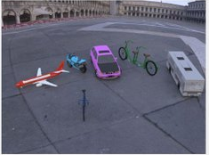
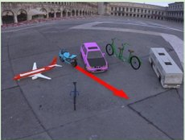

Collision prediction
User
How big is the thing that the small car will collide if it moving forward?

ReImaGin · Reasoning summary
I need to visualize the object’s trajectory before identifying what it will hit.
generate_image("Draw a red arrow starting from the back of the cyan cruiser (motorcycle) and extending straight backward along its current heading to show its path.", image_1)

Answer: Purple ✓